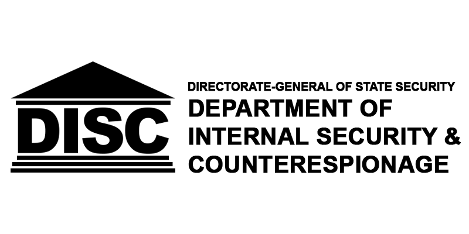
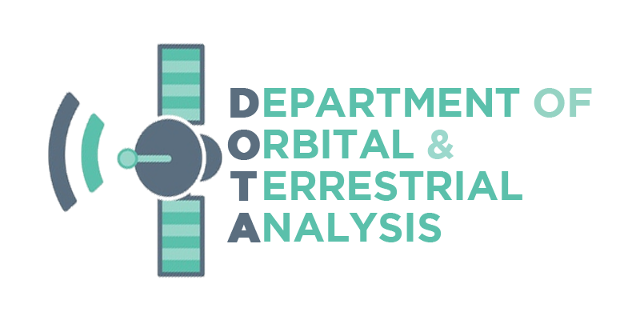
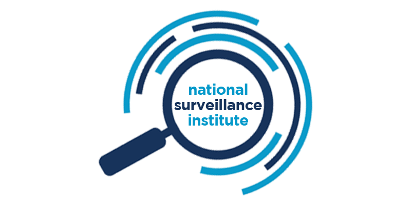

The Directorate-General of State Security
The Directorate-General of State Security is an executive organisation of HIM Government responsible for running the intelligence apparatus of Imperial Royal Union. While the Directorate-General of Public Security focuses on public order and law enforcement, the Directorate-General of State Security focuses on intelligence gathering, counter-espionage, counter-terrorism and maintaining national security. The Director-General of State Security reports to the National Security Council, which is represented by the Lord Constable in the Privy Council of Livenbleaux.
Organisational Structure
| Logo | Sub-Department | Leadership |
|---|---|---|
Director-General's Office Bureau du directeur général Generaldirektörens kontor |
|
|
|  | Department of Internal Security & Service de sécurité intérieure Intern säkerhetskontor |
|
|  | Department of Orbital & Service de renseignement orbital et terrestre Orbital och markundersökningskontor |
|
|  | National Surveillance Institute Institut national de surveillance Nationellt övervakningsinstitut |
|
State Intelligence Service Service de renseignement de l'État Statlig underrättelsetjänst |
|
|
State Security Support Service Service de support de sécurité Säkerhetsstödstjänst |
|
Operational Scope & Jurisdiction
Department of Internal Security & Counterespionage (DISC)
The Department of Internal Security & Counterespionage is the central operations arms of the Directorate-General for counter-terrorism and counter-espionage operating only within Imperial Royal Union. Its responsibilities include the policing of seditious material and investigation into dissent.
Department of Orbital & Terrestrial Analysis (DOTA)
The Department of Orbital & Terrestrial Analysis is responsible for operating all imaging satellites of HIM Government and overflight imaging equipment. It primarily gathers imagery intelligence (IMNIT) and analyses such intelligence, usually in support of the other departments of the Directorate-General.
National Surveillance Institute (NSI)
The National Surveillance Institute is the only department with the authority to conduct mass surveillance operations within Imperial Royal Union. It is the authority governing camera, audio and telecommunication signals surveillance across the security apparatus of HIM Government.
State Intelligence Service (SIS)
The State Intelligence Service is the international counterpart of the NSI, gathering foreign and international signals intelligence (SIGINT), alongside field agents gathering human intelligence (HUMINT), occasionally conducting covert operations in foreing territories to protect Imperial Royal Union's interests.
State Security Support Service (S4)
The State Security Support Service is responsible for the management of internal security of the Directorate-General as well as for the provision of forward, evacuation and ad-hoc support to field operations globally. Such support includes logistical and administrative support. The periodical vetting of personnel employed by the Directorate-General is also conducted by the S4.